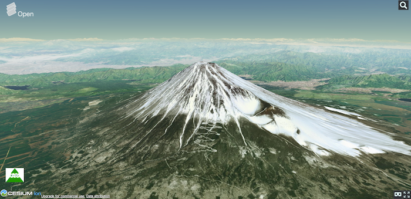
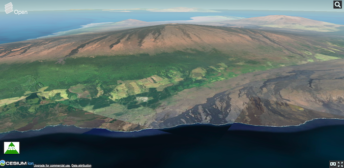
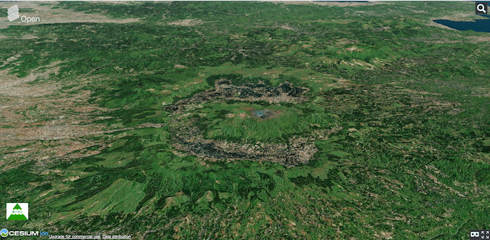
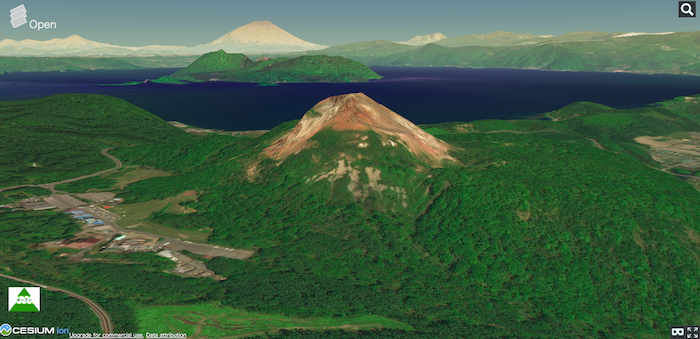
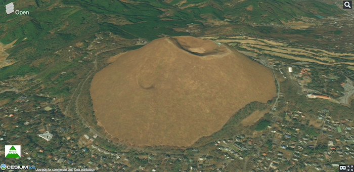
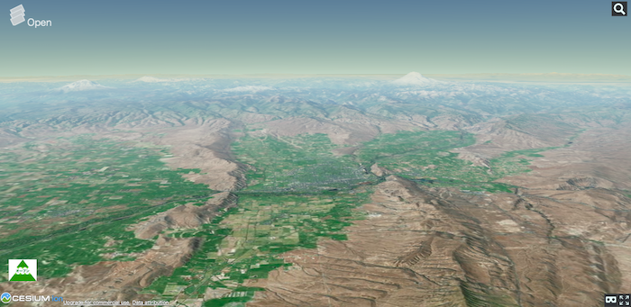
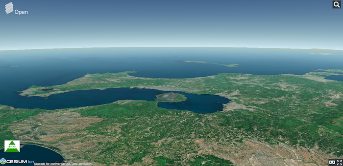
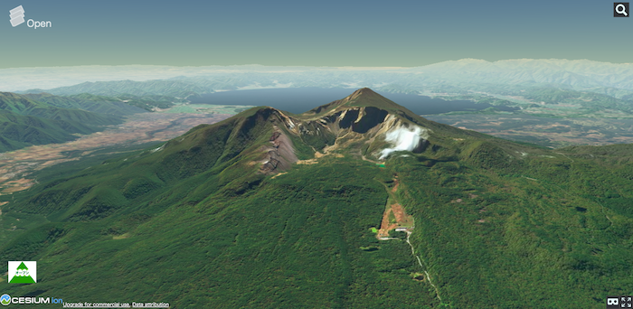
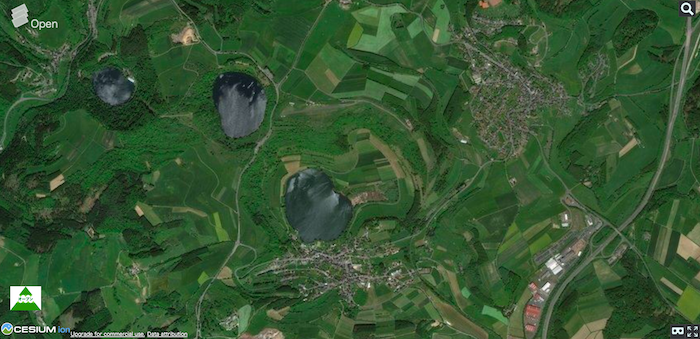

火山
マグマが上昇し、溶岩となって地表や水中に噴火してできる地形を火山とよびます。火山やその周辺は、カルデラ等の特徴的な地形となります。噴火によって、火砕流、火山灰が発生し、人々の生活に影響を与えます。以下では、火山の地形を解説します。
火山の地形
次の表は、主要な火山の地形について、まとめたものです。後ほど、デジタル地図でこの区分に従って、それぞれの地形を見ていきます。
| 特徴 | 典型地形 | |
|---|---|---|
| 成層火山 | ・富士山のような円錐形の地形 |  |
| 楯状火山 | ・流動性の高い溶岩による緩傾斜の地形 |  |
| カルデラ (火山性) |
・大量のマグマの噴出に伴う地下空間の陥没や、山体の爆裂により形成された大規模な凹地 ・一般的に2km以上の直径をもつ ・雨水などによる湖の形成（カルデラ湖） |
 |
| 溶岩円頂丘 | ・地下から上がってきた流動性の低いマグマが、火口で固まった地形 ・マグマの供給により、押し出されるように発達する |
 |
| 火山砕屑丘 | ・火山砕屑（火山灰、軽石等）が火口の周囲に堆積した地形 |  |
| 溶岩台地 | ・溶岩流が積み重なった台地 |  |
| 火砕流台地 | ・大規模な噴火によって、火山灰や軽石が広く堆積した台地 |  |
| 爆裂火口 | ・水蒸気爆発により、火山体が部分的に爆裂した地形 ・馬蹄形、漏斗状の形状 |
 |
| マール | ・マグマ水蒸気爆発（水（地下水）とマグマの急接触）による円形の火口 ・噴出物は周囲に溜まりづらく、火口が陥没し水で満たされる |
 |
※ 表では、複成火山、単成火山の違いは考慮していない。この他に、寄生火山（側火山）、火口原湖、火山性高原、火砕流凹地、火山麓扇状地、流れ山（泥流丘）、堰止湖、溶岩末端崖、溶岩トンネル等の地形がある。国内の火山地形は、国土地理院の火山の活動による地形で3Dモデルとともに詳しく紹介されている。
WebGISで火山を確認する
下の地図で世界の様々な火山を見てみましょう。日本の火山は、'Maps'から、地理院タイル(標準地図)を選択すると等高線で閲覧できます。